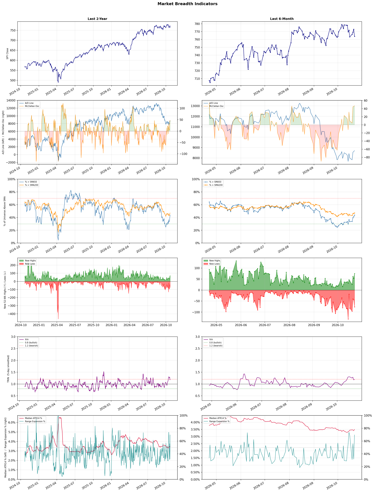

A daily market breadth and sector rotation report for active investors
| Item | Read |
|---|---|
| Regime | Defensive |
| Risk posture | Defensive |
| Universe | 1,313 stocks tracked · 75 new 52-week highs · 30 active swing setups |
| Breadth | only 43.9% of tracked stocks are above SMA50, new lows exceed new highs (76 vs 75) |
| Leadership | Oil & Gas Refining & Marketing, Household & Personal Products, and Discount Stores |
| Weakest groups | Uranium, Electrical Equipment & Parts, and Other Industrial Metals & Mining |
Use this report to prioritize research and chart review; validate entries, stops, liquidity, earnings, and risk before acting.
| Item | Read |
|---|---|
| Primary read | Defensive regime with Defensive risk posture. |
| Research queue | MPC, VLO, PSX, DINO, PBF |
| Leadership focus | Oil & Gas Refining & Marketing, Household & Personal Products, and Discount Stores |
| Caution list | Uranium, Electrical Equipment & Parts, and Other Industrial Metals & Mining |
| Review prompt | Check extension risk, chart location, fundamentals, valuation, and earnings before using any research row. |
| Item | Read |
|---|---|
| Primary read | 4 active risk warnings; use screen output as watchlist input only. |
| Bullish screens | NDAQ, VEEV, FIGS, ARHS, BBY |
| Bearish screens | SE |
| Alerts / levels | Automated trigger, stop, ATR, liquidity, reward/risk, and event-risk levels are pending future enrichment. |
| Review prompt | Open the linked chart, define trigger and invalidation, then check liquidity and event risk independently. |
Risk Posture: Defensive — screen backdrop favors caution; require independent risk review before new exposure
Metric context: McClellan below -50 = elevated selling pressure; below -100 = washout territory. Range Expansion = share of stocks with daily range above their 20-day average. Signal Density = share of tracked names appearing in signal screens.
| Breadth Date | % > SMA50 | % > SMA200 | New Highs | New Lows | McClellan | Median Range | Avg Range | Median ATR14 | Range Expansion | Signal Density |
|---|---|---|---|---|---|---|---|---|---|---|
| 2026-10-22 | 43.9% | 47.1% | 75 | 76 | 47.1 | 4.0% | 4.6% | 3.5% | 69.6% | 1.6% |

Prior comparison date: October 21, 2026
| Metric | Prior | Current | Change |
|---|---|---|---|
| Regime | Defensive | Defensive | unchanged |
| Risk Posture | Defensive | Defensive | unchanged |
| % > SMA50 | 41.1% | 43.9% | +2.8 pts |
| % > SMA200 | 46.6% | 47.1% | +0.5 pts |
| New Highs | 53 | 75 | +22 |
| New Lows | 45 | 76 | -31 |
Top-10 industries entering: Insurance Brokers. Top-10 industries leaving: Software - Application. New multi-signal long setups: AEE, ARHS, BBY, DXC, ED, EXEL, GMAB, MA, ROKU, RVTY. New multi-signal short setups: none.
| Status | Tickers | Read |
|---|---|---|
| Added | AEE, ARHS, BBY, DXC, ED, EXEL, GMAB, MA | New technical screen matches vs prior report. |
| Removed | APLE, AVTR, AZTA, CDW, DRH, FTV, HNGE, HTFL | No longer present in today's technical screen matches. |
| Still Active | ADP, AEP, AMPL, AVPT, BDX, BOX, BRZE, CTAS | Appeared in both current and prior reports. |
| Promoted | NDAQ | Model Screen Score improved by at least 15 points. |
| Downgraded | none | Model Screen Score declined by at least 15 points. |
| Direction | Industry | ETF | Prior Rank | Current Rank | Days | Rank Change |
|---|---|---|---|---|---|---|
| Rose | Apparel Manufacturing | N/A | 81 | 11 | 42 | +70 |
| Rose | Restaurants | N/A | 83 | 19 | 28 | +64 |
| Rose | Building Products & Equipment | XHB | 84 | 27 | 35 | +57 |
| Rose | Healthcare Plans | IHF | 57 | 5 | 28 | +52 |
| Rose | Rental & Leasing Services | N/A | 80 | 29 | 42 | +51 |
Bull: The Apparel Manufacturing industry is experiencing a rising relative strength due to favorable macroeconomic trends, including a shift in sourcing strategies away from China and the revitalization of trade deals, as highlighted in The Economic Times. Additionally, the bullish sentiment reflected in multiple articles, such as those from Yahoo Finance and Forbes, indicates that investors are recognizing the potential for growth in textile-apparel stocks as they adapt to changing consumer preferences and capitalize on emerging market opportunities, positioning themselves for strong performance through 2026.
Bear: While the Apparel Manufacturing industry may currently exhibit rising relative strength, this optimism overlooks significant headwinds such as ongoing supply chain disruptions, rising labor costs, and inflationary pressures that could erode profit margins. Additionally, the shift away from China may lead to increased costs and uncertainties in sourcing from alternative countries, potentially undermining the anticipated growth. Furthermore, consumer sentiment is increasingly influenced by economic uncertainty, which could dampen discretionary spending on apparel, challenging the bullish outlook for the sector.
Verdict: The Apparel Manufacturing industry is likely experiencing rising relative strength due to favorable macroeconomic trends, such as a shift in sourcing strategies and revitalized trade deals, which are attracting investor interest in textile-apparel stocks. However, a key risk lies in ongoing supply chain disruptions and rising labor costs, which could significantly impact profit margins and consumer spending, potentially undermining the sector's growth outlook. Investors should closely monitor these challenges while considering opportunities in emerging markets.
Sources: Google News
Bull: The restaurant industry is experiencing a rising relative strength due to a combination of resilient consumer demand and strategic positioning by key players, as highlighted by the mention of "4 Restaurant Stocks Poised to Thrive Amid Industry Headwinds" on Yahoo Finance. Despite some downgrades for specific companies like Chipotle, the overall sentiment remains bullish, as evidenced by the identification of promising ETFs for 2026, indicating investor confidence in the sector's long-term growth potential. Additionally, the industry's ability to adapt and innovate, as seen in the rise of tokenized restaurant stocks, suggests a forward-looking approach that could attract more investment.
Bear: While the bull thesis highlights resilient consumer demand, it overlooks the significant inflationary pressures and rising operational costs that are squeezing margins across the restaurant industry. The downgrades for companies like Chipotle indicate that even established players are facing challenges, which may signal broader vulnerabilities in consumer spending habits as economic conditions tighten. Furthermore, the focus on tokenized stocks, while innovative, may distract from the fundamental issues of profitability and sustainability that many restaurants are grappling with, potentially leading to a misallocation of investor capital.
Verdict: The restaurant industry's rising relative strength can be attributed to resilient consumer demand and strategic innovations, such as tokenized stocks, which are attracting investor interest. However, the key risk lies in significant inflationary pressures and rising operational costs that could erode margins and impact consumer spending, necessitating a cautious approach to investment in the sector. Investors should closely monitor economic indicators and company performance to ensure alignment with long-term profitability and sustainability goals.
Sources: Google News
Bull: The Building Products & Equipment sector is experiencing rising relative strength primarily due to increased infrastructure investment, as highlighted by the article on heavy construction stocks benefiting from this trend. This uptick in investment is likely driven by government initiatives aimed at enhancing infrastructure, which creates a robust demand for construction materials and equipment. Additionally, the positive performance of key players like Johnson Controls and Aaon, as noted in the headlines, reflects strong market sentiment and growing confidence in the sector's growth prospects.
Bear: While the Building Products & Equipment sector may currently show rising relative strength due to increased infrastructure investment, this trend could be short-lived as potential economic headwinds loom. Factors such as rising interest rates, supply chain disruptions, and inflationary pressures could dampen future demand for construction materials and equipment. Furthermore, the positive performance of stocks like Johnson Controls and Aaon may not be sustainable if broader economic conditions deteriorate, leading to a potential correction in the sector.
Verdict: The Building Products & Equipment sector is likely experiencing rising relative strength due to substantial government infrastructure investments that are driving demand for construction materials and equipment. However, key risks such as rising interest rates, supply chain disruptions, and inflationary pressures could undermine this growth, suggesting that investors should closely monitor economic indicators to assess the sustainability of this upward trend.
Sources: Google News
Bull: The rising relative strength of Healthcare Plans is likely driven by increasing investor confidence in the sector's defensive nature and innovation potential, as highlighted by Morningstar's commentary on the mixed Q2 performance yet attractive outlook. Additionally, the focus on top-performing health insurance stocks for 2026, as noted by multiple sources like The Motley Fool and U.S. News, suggests a growing recognition of the sector's resilience and growth opportunities amid broader economic uncertainties. This combination of defensive appeal and innovation positions healthcare plans favorably in the current market landscape.
Bear: While the rising relative strength of Healthcare Plans may suggest investor confidence, it is crucial to recognize that this sector is facing significant headwinds, including regulatory pressures, rising operational costs, and increasing scrutiny over pricing practices. Additionally, the focus on "top-performing" stocks may be misleading, as the overall healthcare landscape is fraught with uncertainties, such as potential policy changes and the impact of economic downturns on consumer spending for non-essential health services. These factors could undermine the perceived resilience and growth potential of healthcare plans, making them a riskier investment than currently acknowledged.
Verdict: The rising relative strength of Healthcare Plans is primarily driven by increasing investor confidence in the sector's defensive characteristics and potential for innovation, as highlighted by positive outlooks from analysts. However, investors should remain cautious of significant risks, including regulatory pressures and rising operational costs, which could undermine the sector's resilience and growth prospects amid broader economic uncertainties. It is advisable to closely monitor these regulatory developments and pricing scrutiny when considering investments in this sector.
Sources: Google News
Bull: The Rental & Leasing Services sector is experiencing rising relative strength primarily due to robust demand for flexible asset utilization amid economic uncertainty, as highlighted by recent articles discussing the performance of companies like Global Ship Lease (GSL) and the attractiveness of REITs. Additionally, the focus on commercial real estate stocks for 2026 suggests a positive outlook on long-term leasing trends, driven by businesses seeking to optimize costs and adapt to changing market conditions, further bolstering investor sentiment in this sector.
Bear: While the Rental & Leasing Services sector may currently exhibit rising relative strength, this trend could be misleading as it is largely driven by short-term demand fluctuations rather than sustainable growth. Economic uncertainty may lead to increased asset utilization temporarily, but it also raises concerns about long-term viability, particularly if businesses face tightening budgets or rising interest rates that could stifle investment in leasing. Furthermore, the focus on commercial real estate stocks for 2026 may overlook the potential for significant market corrections or shifts in consumer behavior that could adversely impact the sector.
Verdict: The Rental & Leasing Services sector is likely experiencing upward momentum due to heightened demand for flexible asset utilization amidst economic uncertainty, with companies like Global Ship Lease benefiting from this trend. However, investors should be cautious of the bear case risk, as potential tightening budgets and rising interest rates could dampen long-term growth prospects and lead to significant market corrections. It is advisable to closely monitor economic indicators and consumer behavior shifts that may impact leasing demand.
Sources: Google News
| Direction | Industry | ETF | Prior Rank | Current Rank | Days | Rank Change |
|---|---|---|---|---|---|---|
| Fell | Agricultural Inputs | N/A | 5 | 78 | 42 | -73 |
| Fell | Electronic Components | XLK | 9 | 80 | 28 | -71 |
| Fell | Capital Markets | KCE | 8 | 73 | 28 | -65 |
| Fell | Semiconductor Equipment & Materials | SOXX | 14 | 75 | 28 | -61 |
| Fell | Gold | GDX | 6 | 60 | 42 | -54 |
Bear: While the bull analyst suggests that the Agricultural Inputs sector may present buying opportunities due to long-term demand fundamentals, the persistent pressures from weak monsoon demand and rising costs indicate a more troubling trend that could undermine future profitability. Additionally, the relative weakness of this sector compared to the broader materials market suggests that investor sentiment is shifting away from agricultural inputs, which could lead to prolonged underperformance as competition for capital intensifies in more resilient sectors. This divergence raises concerns about the sustainability of demand and profitability in the agricultural inputs space, making it a risky investment in the near term.
Bull: The Agricultural Inputs sector is experiencing a decline in relative strength primarily due to recent pressures from weak monsoon demand and rising costs impacting earnings, as highlighted by Indiatimes. Additionally, while the broader economically sensitive materials sector is breaking out, Agricultural Inputs have been overshadowed by stronger performance in other segments, as noted by Morningstar. This divergence suggests that while the sector faces short-term challenges, it may present buying opportunities as underlying demand fundamentals remain intact for the long term.
Verdict: The Agricultural Inputs sector is declining due to weak monsoon demand and rising costs, which are squeezing margins and impacting earnings. While long-term demand fundamentals may still support the sector, the key risk lies in the shifting investor sentiment and competition for capital, which could prolong underperformance and challenge profitability in the near term. Investors should approach this sector cautiously, considering potential buying opportunities only if signs of recovery in demand and cost stabilization emerge.
Sources: Google News
Bear: While the bull analyst attributes the decline in relative strength to broader market concerns, it's crucial to recognize that the electronic components industry is facing fundamental challenges, including supply chain disruptions and rising input costs, which are not just temporary market fluctuations. Additionally, the mixed earnings results, particularly from companies like Flex, signal deeper issues within the sector, suggesting that the recent strong performance of a few outliers like Amphenol may not be sustainable and could mask a broader downturn in demand and profitability across the industry.
Bull: The recent decline in the relative strength of the Electronic Components industry can likely be attributed to sector-wide selling pressure, as highlighted by Corning's 5.3% drop, which reflects broader market concerns rather than company-specific issues. Additionally, while some companies like Amphenol have reported strong earnings, the overall sentiment may be dampened by mixed results across the sector, as indicated by the varied performance of companies like Flex, which suggests a lack of consistent momentum in the industry.
Verdict: The recent decline in the Electronic Components industry is primarily driven by fundamental challenges such as ongoing supply chain disruptions and rising input costs, which are likely to persist and impact profitability. While some companies like Amphenol may report strong earnings, the inconsistent performance of others, like Flex, highlights a potential downturn in demand that investors should closely monitor. The key risk is that these underlying issues could lead to a broader decline in industry performance, making it essential for stakeholders to reassess their exposure to the sector.
Sources: Google News
Bear: While the bull analyst highlights macroeconomic uncertainties and competitive pressures, it’s crucial to recognize that the broader economic environment is increasingly challenging, with rising interest rates and inflation potentially stifling capital flows even further. Additionally, the aggressive push by China into capital markets and AI could divert investment away from U.S. markets, exacerbating the decline in relative strength and signaling a long-term shift in investor sentiment that may not be easily reversed. This suggests that the current bearish trend may persist as investors reassess the viability and growth potential of the U.S. Capital Markets sector in light of these emerging global dynamics.
Bull: The Capital Markets sector is experiencing a decline in relative strength primarily due to macroeconomic uncertainties and competitive pressures highlighted in recent headlines. The mention of the U.S. stock market's midterm mindset by RBC Wealth Management suggests investor caution, which can lead to reduced trading volumes and lower capital flows, negatively impacting the sector's performance. Additionally, the Bloomberg report on China's $28 trillion capital markets aiming to challenge the U.S. in AI indicates increasing global competition, which may be causing investors to reassess growth prospects within the U.S. Capital Markets, contributing to its relative weakness.
Verdict: The Capital Markets sector's decline is fundamentally driven by macroeconomic uncertainties, including rising interest rates and inflation, which are dampening investor confidence and capital flows. The increasing global competition, particularly from China's aggressive advancements in capital markets and AI, poses a significant risk, potentially leading to a long-term shift in investor sentiment away from U.S. markets. Investors should closely monitor these macroeconomic indicators and global competitive dynamics to make informed decisions regarding their exposure to the Capital Markets sector.
Sources: Google News
Bear: While profit-taking may account for some of the recent declines, the underlying issues in the semiconductor equipment and materials sector suggest a more troubling outlook. The persistent uncertainty in the chip equipment market, coupled with potential supply chain disruptions and geopolitical tensions affecting semiconductor production, raises significant concerns about long-term demand. Additionally, the industry's reliance on cyclical trends makes it vulnerable to economic downturns, which could further exacerbate the current weakness in relative strength.
Bull: The Semiconductor Equipment & Materials sector is experiencing a decline in relative strength primarily due to profit-taking after a strong performance in the previous year, as highlighted by the significant drops in stocks like Applied Materials and Lam Research. Additionally, uncertainty in the chip equipment outlook, as noted in the Yahoo Finance article, is contributing to investor caution, leading to a sector-wide sell-off that has affected companies like Veeco Instruments. This combination of profit realization and a cautious outlook is driving the relative weakness in this industry compared to others.
Verdict: The recent decline in the Semiconductor Equipment & Materials sector appears to be driven by profit-taking after a strong previous year, alongside heightened investor caution stemming from uncertainty in the chip equipment outlook. However, the key risk highlighted by the bear thesis is the potential for long-term demand erosion due to supply chain disruptions and geopolitical tensions, which could further weaken the sector amidst cyclical economic downturns. Investors should closely monitor these geopolitical developments and supply chain dynamics when considering positions in this industry.
Sources: Google News
Bear: While the bull analyst highlights the resilience of gold miners, the underlying cost pressures and declining relative strength trend suggest that the sector may struggle to sustain profitability in the face of rising operational costs and a shifting investor sentiment towards riskier assets. The "Dotcom 2.0 Crash" headline indicates a broader market correction that could further erode demand for gold as a safe haven, undermining any potential recovery for gold miners. Additionally, the suggestion that macroeconomic conditions will stabilize may overlook the persistent inflationary pressures and geopolitical uncertainties that could continue to weigh on gold prices.
Bull: The recent decline in gold's relative strength can be attributed to rising cost pressures within the gold mining sector, as highlighted by UBS's focus on top gold mining stocks amid these challenges. Additionally, the broader market sentiment, reflected in headlines like "Gold Edges Down In Dotcom 2.0 Crash," suggests that investors are shifting their focus away from gold in favor of riskier assets, leading to a selloff in gold-related investments. Despite these pressures, the resilience of gold miners, as noted in their outperformance against other S&P 500 sectors in Q3, indicates potential for recovery as macroeconomic conditions stabilize.
Verdict: The recent decline in the gold industry can be fundamentally attributed to rising operational costs within the mining sector and a shift in investor sentiment towards riskier assets, as indicated by the "Dotcom 2.0 Crash" narrative. The key risk from the bear case is that persistent inflationary pressures and geopolitical uncertainties may continue to suppress demand for gold as a safe haven, potentially hindering any recovery in gold prices and mining profitability. Investors should closely monitor macroeconomic indicators and market sentiment to gauge the potential for a rebound in gold investments.
Sources: Google News
| Industry | Rank | ETF | 7d | 14d | 28d | 42d | Chg 42d | Size | 20D | 60D | Composite | Active Setups |
|---|---|---|---|---|---|---|---|---|---|---|---|---|
| Oil & Gas Refining & Marketing | 1 | CRAK | 1 | 1 | 1 | 1 | 0 | 7 | 11.4% | 32.9% | 0.971 | 0 |
| Household & Personal Products | 2 | XLP | 2 | 9 | 26 | 28 | +26 | 12 | 14.0% | 14.9% | 0.940 | 0 |
| Discount Stores | 3 | XRT | 3 | 5 | 21 | 37 | +34 | 7 | 11.8% | 9.5% | 0.929 | 0 |
| Oil & Gas Integrated | 4 | XLE | 4 | 6 | 4 | 2 | -2 | 10 | 8.5% | 15.8% | 0.892 | 0 |
| Healthcare Plans | 5 | IHF | 10 | 40 | 57 | 23 | +18 | 10 | 12.3% | 0.7% | 0.882 | 0 |
| Insurance Brokers | 6 | N/A | 19 | 27 | 42 | 14 | +8 | 6 | 12.0% | 9.3% | 0.863 | 0 |
| Oil & Gas E&P | 7 | XOP | 18 | 29 | 11 | 3 | -4 | 26 | 7.9% | 14.7% | 0.859 | 0 |
| REIT - Hotel & Motel | 8 | XLRE | 11 | 12 | 41 | 36 | +28 | 9 | 11.8% | 2.0% | 0.857 | 0 |
| Health Information Services | 9 | N/A | 6 | 2 | 3 | 7 | -2 | 12 | 5.7% | 37.2% | 0.855 | 0 |
| Apparel Retail | 10 | XRT | 5 | 8 | 36 | 47 | +37 | 8 | 9.6% | 7.9% | 0.840 | 1 |
Rank columns (7d–42d) show the industry's rank that many trading days ago — lower is stronger. Chg 42d = rank change vs 42 trading days ago — positive means the industry moved up. 20D and 60D are the mean stock return within the industry over that period. Active Setups: count of today's swing-trade candidates from this industry appearing across all signal screens.
| Industry | Rank | ETF | 7d | 14d | 28d | 42d | Chg 42d | Size | 20D | 60D | Composite | Active Setups |
|---|---|---|---|---|---|---|---|---|---|---|---|---|
| Uranium | 87 | URA | 87 | 87 | 78 | 51 | -36 | 6 | -20.3% | -18.7% | 0.037 | 0 |
| Electrical Equipment & Parts | 86 | XLI | 86 | 72 | 40 | 85 | -1 | 12 | -25.2% | -19.9% | 0.052 | 0 |
| Other Industrial Metals & Mining | 85 | N/A | 83 | 82 | 63 | 55 | -30 | 21 | -23.3% | -13.5% | 0.083 | 0 |
| REIT - Mortgage | 84 | N/A | 84 | 86 | 79 | 52 | -32 | 11 | -10.5% | -21.5% | 0.087 | 0 |
| Aerospace & Defense | 83 | ITA | 82 | 80 | 49 | 84 | +1 | 26 | -20.7% | -15.5% | 0.102 | 0 |
| Resorts & Casinos | 82 | N/A | 80 | 85 | 86 | 73 | -9 | 6 | -6.9% | -23.9% | 0.104 | 0 |
| Gambling | 81 | N/A | 85 | 84 | 87 | 39 | -42 | 5 | -5.0% | -23.0% | 0.111 | 0 |
| Electronic Components | 80 | XLK | 58 | 20 | 9 | 69 | -11 | 10 | -23.6% | -10.4% | 0.145 | 0 |
| Utilities - Renewable | 79 | N/A | 81 | 78 | 47 | 79 | 0 | 6 | -20.7% | -17.2% | 0.148 | 0 |
| Agricultural Inputs | 78 | N/A | 75 | 59 | 38 | 5 | -73 | 5 | -14.4% | -17.1% | 0.182 | 1 |
Rank columns (7d–42d) show the industry's rank that many trading days ago — lower is stronger. Chg 42d = rank change vs 42 trading days ago — positive means the industry moved up. 20D and 60D are the mean stock return within the industry over that period. Active Setups: count of today's swing-trade candidates from this industry appearing across all signal screens.
These are research candidates from top-ranked stocks, capped at five names per industry to avoid over-concentration. Returns shown (60D, 120D, 250D) are historical — they reflect where prices have already moved, not forward expectations. Extension Risk flags names that may require extra patience or a better entry point. They are not buy signals.
Chart: TV = TradingView chart (opens in browser); PDF = local chart file (if downloaded).
| Ticker | Name | Industry | Industry Rank | Market Cap | 60D Hist | 120D Hist | 250D Hist | Extension Risk | Research Reason | Chart |
|---|---|---|---|---|---|---|---|---|---|---|
| MPC | Marathon Petroleum | Oil & Gas Refining & Marketing | 1 | N/A | 49.2% | 87.8% | 138.3% | Constructive | Top-ranked in industry | TV |
| VLO | Valero Energy | Oil & Gas Refining & Marketing | 1 | N/A | 42.0% | 74.2% | 151.4% | Constructive | Top-ranked in industry | TV |
| PSX | Phillips 66 | Oil & Gas Refining & Marketing | 1 | N/A | 38.4% | 63.6% | 115.8% | Constructive | Top-ranked in industry | TV |
| DINO | HF Sinclair | Oil & Gas Refining & Marketing | 1 | N/A | 36.8% | 79.2% | 130.3% | Constructive | Top-ranked in industry | TV |
| PBF | PBF Energy | Oil & Gas Refining & Marketing | 1 | N/A | 25.6% | 86.2% | 138.5% | Constructive | Top-ranked in industry | TV |
| ODD | ODDITY Tech | Household & Personal Products | 2 | N/A | 56.0% | 58.8% | -50.4% | Extended | Top-ranked in industry; extended | TV |
| ELF | e.l.f. Beauty | Household & Personal Products | 2 | N/A | 42.1% | 90.1% | -8.0% | Constructive | Top-ranked in industry | TV |
| COTY | Coty Inc | Household & Personal Products | 2 | N/A | 17.6% | 30.0% | -22.1% | Constructive | Top-ranked in industry | TV |
| CL | Colgate-Palmolive | Household & Personal Products | 2 | N/A | 4.8% | 12.9% | 27.1% | Constructive | Top-ranked in industry | TV |
| KMB | Kimberly-Clark | Household & Personal Products | 2 | N/A | 0.4% | 18.0% | -0.6% | Constructive | Top-ranked in industry | TV |
| DG | Dollar General | Discount Stores | 3 | N/A | 8.6% | 22.8% | 37.7% | Constructive | Top-ranked in industry | TV |
| BJ | BJ's Wholesale Club Holdings | Discount Stores | 3 | N/A | 6.6% | 14.0% | 14.1% | Constructive | Top-ranked in industry | TV |
| WMT | Walmart | Discount Stores | 3 | N/A | 6.3% | -7.6% | 14.3% | Constructive | Top-ranked in industry | TV |
| COST | Costco | Discount Stores | 3 | N/A | 4.5% | 0.8% | 8.7% | Constructive | Top-ranked in industry | TV |
| DLTR | Dollar Tree | Discount Stores | 3 | N/A | 1.6% | 38.4% | 30.2% | Constructive | Top-ranked in industry | TV |
| PBR | Petroleo Brasileiro SA Petrobras | Oil & Gas Integrated | 4 | N/A | 41.9% | 21.3% | 125.8% | Constructive | Top-ranked in industry | TV |
| SHEL | Shell | Oil & Gas Integrated | 4 | N/A | 20.8% | 21.0% | 44.9% | Constructive | Top-ranked in industry | TV |
| CVX | Chevron | Oil & Gas Integrated | 4 | N/A | 19.2% | 21.0% | 50.5% | Constructive | Top-ranked in industry | TV |
| SU | Suncor Energy | Oil & Gas Integrated | 4 | N/A | 18.4% | 16.1% | 99.5% | Constructive | Top-ranked in industry | TV |
| BP | BP PLC | Oil & Gas Integrated | 4 | N/A | 17.0% | 10.4% | 50.4% | Constructive | Top-ranked in industry | TV |
These are technical screen matches from existing signal files. They are not trade recommendations. Trigger, stop, ATR, liquidity, reward/risk, and event risk still require separate validation until those inputs are available.
Model Screen Score is weighted by signal count, industry rank, freshness, and setup type. It is not a probability of profit, expected return, or suitability rating. Industry cap: max 3 candidates per industry.
Signal glossary: Momentum Pullback = stock in an uptrend that has pulled back 10–30% and shows re-entry conditions. MA Compression = short- and long-term moving averages converging, often preceding a directional move. Three-Day Up/Down = three consecutive closes in the same direction. New 52Wk High/Low = price reached a new annual extreme.
Chart: TV = TradingView chart (opens in browser); PDF = local chart file (if downloaded).
| Ticker | Industry | Setups | Close | Industry Rank | Signal Count | Model Screen Score | Reason | Chart |
|---|---|---|---|---|---|---|---|---|
| NDAQ | Financial Data & Stock Exchanges | MA Compression; New 52Wk High; Three-Day Up | 103.30 | 14 | 3 | 105 | Multi-signal; new-high strength | TV |
| VEEV | Health Information Services | New 52Wk High; Three-Day Up | 322.55 | 9 | 2 | 85 | Multi-signal; top industry breakout | TV |
| FIGS | Apparel Manufacturing | New 52Wk High; Three-Day Up | 20.46 | 11 | 2 | 85 | Multi-signal; new-high strength | TV |
| ARHS | Specialty Retail | New 52Wk High; Three-Day Up | 11.53 | 12 | 2 | 85 | Multi-signal; new-high strength | TV |
| BBY | Specialty Retail | New 52Wk High; Three-Day Up | 99.83 | 12 | 2 | 85 | Multi-signal; new-high strength | TV |
| ADP | Software - Application | New 52Wk High; Three-Day Up | 307.94 | 15 | 2 | 85 | Multi-signal; new-high strength | TV |
| AMPL | Software - Application | New 52Wk High; Three-Day Up | 17.07 | 15 | 2 | 85 | Multi-signal; new-high strength | TV |
| BRZE | Software - Application | New 52Wk High; Three-Day Up | 45.86 | 15 | 2 | 85 | Multi-signal; new-high strength | TV |
| TRV | Insurance - Property & Casualty | New 52Wk High; Three-Day Up | 405.44 | 16 | 2 | 77 | Multi-signal; new-high strength | TV |
| BDX | Medical Instruments & Supplies | New 52Wk High; Three-Day Up | 200.42 | 21 | 2 | 77 | Multi-signal; new-high strength | TV |
| RVTY | Diagnostics & Research | New 52Wk High; Three-Day Up | 157.36 | 22 | 2 | 77 | Multi-signal; new-high strength | TV |
| AVPT | Software - Infrastructure | New 52Wk High; Three-Day Up | 16.08 | 23 | 2 | 77 | Multi-signal; new-high strength | TV |
| BOX | Software - Infrastructure | New 52Wk High; Three-Day Up | 42.78 | 23 | 2 | 77 | Multi-signal; new-high strength | TV |
| ED | Utilities - Regulated Electric | MA Compression; New 52Wk High | 116.26 | 26 | 2 | 75 | Multi-signal; new-high strength | TV |
| TREX | Building Products & Equipment | New 52Wk High; Three-Day Up | 51.07 | 27 | 2 | 70 | Multi-signal; new-high strength | TV |
| ROKU | Entertainment | New 52Wk High; Three-Day Up | 160.06 | 28 | 2 | 70 | Multi-signal; new-high strength | TV |
| DXC | Information Technology Services | New 52Wk High; Three-Day Up | 16.08 | 33 | 2 | 70 | Multi-signal; new-high strength | TV |
| HAS | Leisure | New 52Wk High; Three-Day Up | 117.23 | 34 | 2 | 70 | Multi-signal; new-high strength | TV |
| MFC | Insurance - Life | New 52Wk High; Three-Day Up | 45.62 | 36 | 2 | 70 | Multi-signal; new-high strength | TV |
| SSL | Specialty Chemicals | New 52Wk High; Three-Day Up | 17.46 | 38 | 2 | 70 | Multi-signal; new-high strength | TV |
| CTAS | Specialty Business Services | New 52Wk High; Three-Day Up | 224.04 | 39 | 2 | 70 | Multi-signal; new-high strength | TV |
| AEE | Utilities - Regulated Electric | MA Compression; Three-Day Up | 108.94 | 26 | 2 | 65 | Multi-signal; compression setup | TV |
| AEP | Utilities - Regulated Electric | MA Compression; Three-Day Up | 130.64 | 26 | 2 | 65 | Multi-signal; compression setup | TV |
| SHW | Specialty Chemicals | MA Compression; Three-Day Up | 345.63 | 38 | 2 | 65 | Multi-signal; compression setup | TV |
| MA | Credit Services | New 52Wk High; Three-Day Up | 633.21 | 48 | 2 | 65 | Multi-signal; new-high strength | TV |
| V | Credit Services | New 52Wk High; Three-Day Up | 414.34 | 48 | 2 | 65 | Multi-signal; new-high strength | TV |
| EXEL | Biotechnology | New 52Wk High; Three-Day Up | 65.31 | 53 | 2 | 65 | Multi-signal; new-high strength | TV |
| GMAB | Biotechnology | New 52Wk High; Three-Day Up | 40.00 | 53 | 2 | 65 | Multi-signal; new-high strength | TV |
| TD | Banks - Diversified | New 52Wk High; Three-Day Up | 125.12 | 56 | 2 | 65 | Multi-signal; new-high strength | TV |
Bearish setups — stocks making new lows or showing persistent downside patterns. Validate carefully before acting.
| Ticker | Industry | Setups | Close | Industry Rank | Signal Count | Model Screen Score | Reason | Chart |
|---|---|---|---|---|---|---|---|---|
| SE | Internet Retail | New 52Wk Low; Three-Day Down | 75.69 | 42 | 2 | 35 | Multi-signal; new-low weakness | TV |
How To Use This Report
| Use | Purpose |
|---|---|
| Market map | Start with breadth, regime, risk warnings, and what changed since the prior report. |
| Industry scan | Use leading, deteriorating, rising, and declining industries to focus research. |
| Research queue | Treat long-term candidates as names for deeper fundamental, valuation, and chart review. |
| Technical review | Treat bullish and bearish screen matches as watchlist inputs that require independent trigger, stop, liquidity, and event-risk checks. |
| Source follow-up | Use chart links and source files to verify raw inputs before relying on any row. |
What This Report Is Not
| Not | Meaning |
|---|---|
| Investment advice | The report does not evaluate personal objectives, risk tolerance, tax situation, account type, or suitability. |
| Buy/sell recommendation | Named tickers are research candidates or screen matches, not recommendations to transact. |
| Price target | The report does not provide fair value estimates, targets, or expected returns. |
| Trade plan | Trigger, stop, sizing, reward/risk, liquidity, and event-risk review remain separate user work. |
| Performance claim | Model Screen Score is not validated historical performance or a forecast of future results. |
| Item | Note |
|---|---|
| Version | Daily Report Methodology v1 |
| Model Screen Score | Screen-fit rank based on signal count, industry rank, freshness, and setup type. |
| Not predictive proof | The score is not expected return, probability of profit, historical validation, or suitability analysis. |
| Industry ranks | Composite industry ranks use existing daily ranking outputs and historical rank columns when available. |
| Research candidates | Long-term rows are research candidates from ranked stocks and leading industries, with historical returns labeled as historical only. |
| Technical matches | Bullish and bearish rows are screen matches requiring independent chart, trigger, stop, liquidity, and event-risk review. |
| Source | Status | Rows | Path |
|---|---|---|---|
| Market breadth | present | 1254 | breadth_20261022.csv |
| Industry composite rankings | present | 87 | all_industry_composite_20261022.csv |
| Top ranked stocks | present | 107 | top_ranked_composite_20261022.csv |
| All ranked stocks | present | 1313 | all_stocks_composite_sorted_20261022.csv |
| Top momentum pullbacks | present | 1465 | top_momentum_pullbacks_20261022.csv |
| MA compression | present | 1465 | ma_compression_stocks_20261022.csv |
| Three-day up/down | present | 184 | three_day_up_down_stocks_20261022.csv |
| New 52-week members | present | 151 | breadth_new_52wk_members_20261022.csv |
This report is generated from automated technical screens and is for informational and research purposes only. It is not investment advice, a solicitation, or a recommendation to buy or sell any security. Past performance is not indicative of future results. You are solely responsible for your own investment decisions. Consult a licensed financial advisor before acting on any information herein.